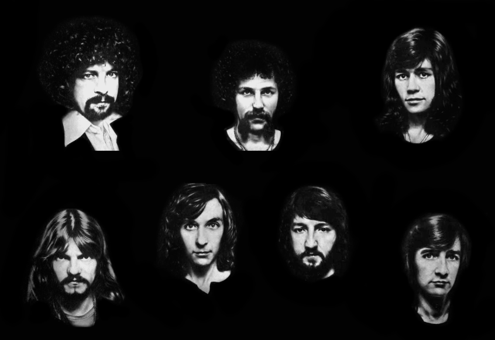

← All bands
Orchestral Rock · Orchestral Rock
Electric Light Orchestra
Formed in Birmingham in 1970 by Jeff Lynne, Roy Wood and Bev Bevan as an offshoot of The Move, ELO set out to pick up where The Beatles' “I Am the Walrus” left off — fusing rock instrumentation with cellos, violins and layered studio production. Through the 1970s the group became one of Britain's most successful exports, filling stadiums with a sound as ornate as their spaceship stage sets.
Lineup
- Jeff Lynne — vocals, guitar
- Roy Wood — cello, vocals (early years)
- Bev Bevan — drums
- Richard Tandy — keyboards

Discography & Spotify
Three landmark albums, streamable in full.